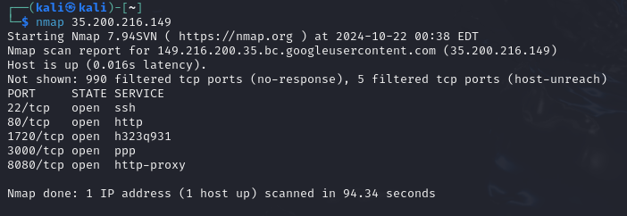
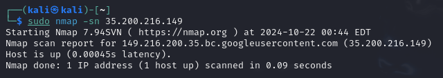
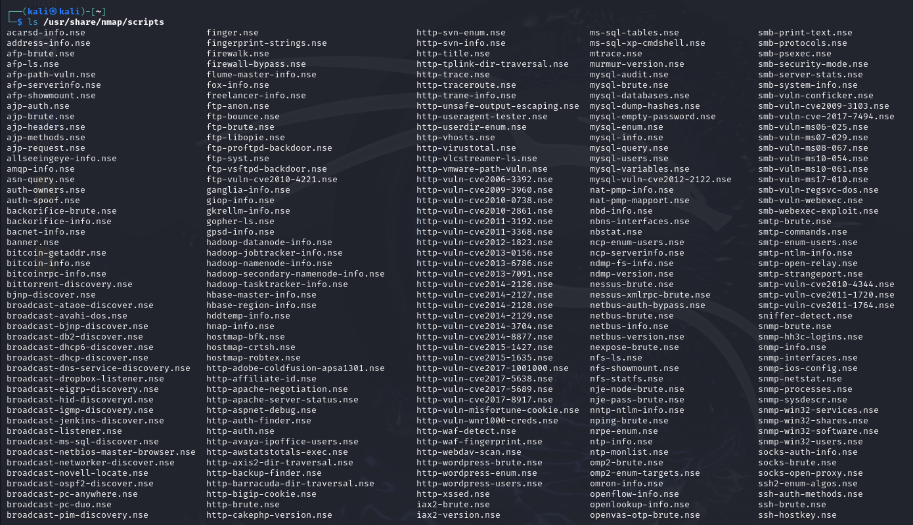
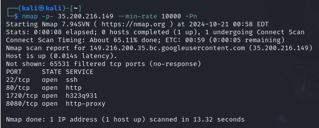

Nmap in Ethical Hacking | Port Scanning
Posted on October 21, 2024
What is a Port?
Ports are numerical identifiers for specific network services or applications. Each device or server uses ports to differentiate between different services (like email, web servers, file transfer, etc.). A device can have up to 65,536 ports, divided into well-known ports (0-1023), registered ports (1024-49151), and dynamic/private ports (49152-65535).
Well-Known Ports
These are commonly used for popular services:
- Port 80: HTTP (web traffic)
- Port 443: HTTPS (secure web traffic)
- Port 22: SSH (secure shell for remote access)
- Port 21: FTP (file transfer protocol)
- Port 25: SMTP (email sending)
Role in Ethical Hacking
Port Scanning: A fundamental technique in ethical hacking used to identify which ports are open on a target system. By discovering open ports, ethical hackers can identify services running on the system and determine if there are any vulnerabilities to exploit.
Tools like Nmap are often used to scan ports to see which services are exposed.
Open vs. Closed Ports
Open Ports: Actively accepting connections and can be a gateway for communication. They might be vulnerable if running an outdated or insecure service.
Closed Ports: Not accepting connections and usually secure from most basic external threats.
Filtering Ports: Firewalls and other security measures can block or filter traffic on certain ports to prevent unauthorized access. Ethical hackers may need to test if firewall rules are properly configured.
What is Nmap?
Nmap is short for Network Mapper. It is an open-source Linux command-line tool that is used to scan IP addresses and ports in a network and to detect installed applications.
Nmap allows network admins to find which devices are running on their network, discover open ports and services, and detect vulnerabilities.
Gordon Lyon (pseudonym Fyodor) wrote Nmap as a tool to help map an entire network easily and to find its open ports and services.
Nmap has become hugely popular, being featured in movies like The Matrix and the popular series Mr. Robot.
Ethical hackers use Nmap to identify live hosts on a network, open ports, running services, and even operating systems. It allows for different types of scans that can reveal detailed information about the target network without actively engaging (as in a passive scan) or with active probing (as in aggressive scanning).
Types of Scans in Nmap
- SYN Scan: Also known as "half-open" scanning, this is the most popular form of port scanning. It doesn't complete the TCP handshake, making it less detectable by firewalls.
- TCP Connect Scan: This scan completes the TCP handshake, making it more likely to be logged but it’s also more thorough.
- UDP Scan: Used to check for open UDP ports.
- Version Detection: Determines the software version of services running on open ports.
- OS Detection: Identifies the operating system running on a target machine.
Basic Nmap Commands
1. Basic Scan
nmap target_ip
By default, Nmap scans the 1,000 most commonly used TCP ports. These are known as the Top 1,000 well-known ports and are selected because they are most likely to be open and in use by services on a network. Nmap maintains a list of the 1,000 most popular ports based on research and usage statistics collected over time. These ports are considered the most likely to be open on a variety of systems, so scanning them by default is often sufficient to identify many open services.
2. Scan Specific Ports
nmap -p 22,80,443 target_ip
nmap -p 1-1000 target_ip
Scans the specified ports (22, 80, and 443) on the target.The -p option is used to specify which ports Nmap should scan.
3. Scan All Ports
nmap -p- target_ip
Scans all 65,536 TCP ports on the target.
4. Service Version Detection
nmap -sV target_ip
Detects versions of services running on open ports.
5. Operating System Detection
nmap -O target_ip
Attempts to determine the operating system of the target host.
6. Aggressive Scan
nmap -A target_ip
Performs a more comprehensive scan, including OS detection, version detection, script scanning, and traceroute.
7. Ping Scan (No Port Scan)
nmap -sn target_ip
Checks if the target host is up without scanning for open ports.
8. TCP SYN Scan (Stealth Scan)
nmap -sS target_ip
Performs a TCP SYN scan to identify open ports without completing the TCP handshake.
What is a Stealth Scan (SYN Scan)?
A stealth scan (also known as a half-open scan or SYN scan) is a type of port scanning technique used to probe target systems without completing the full TCP connection handshake. Its goal is to avoid detection by intrusion detection systems (IDS) or firewalls, making it more difficult for the target system to detect and log the scan. In a stealth scan (specifically, a SYN scan), the process only partially completes the TCP handshake:
- SYN: The attacker sends a SYN packet to the target to check if the port is open.
-
SYN-ACK or RST:
- If the port is open, the target responds with a SYN-ACK.
- If the port is closed, the target responds with an RST (reset) packet.
- No ACK: Instead of completing the handshake by sending an ACK, the attacker sends an RST (reset) packet to terminate the connection before it’s fully established.
Because the connection is never fully established, this scan is considered "stealthy," as it leaves fewer traces in system logs compared to a full TCP connection. Many security devices are configured to log completed connections, but not incomplete ones, making this technique less detectable.
Key Characteristics of Stealth Scans
- Avoids Full TCP Handshake: By not completing the handshake, the attacker reduces the risk of detection by security systems.
- Quick and Efficient: Stealth scans are fast and can cover a wide range of ports in a relatively short time.
- Less Intrusive: Because it doesn't fully engage the target service, it’s often less disruptive than a full connection scan (such as a TCP connect scan).
- Avoiding IDS/IPS Detection: Many Intrusion Detection Systems (IDS) or Intrusion Prevention Systems (IPS) focus on fully established connections, which makes stealth scans harder to detect.
Disadvantages:
- Still Detectable: Some modern security devices are configured to detect SYN scans.
- No UDP Scanning: SYN scans work only for TCP ports.
9. UDP Scan
nmap -sU target_ip
Scans for open UDP ports on the target.
10. Output to File
nmap -oN output.txt target_ip
Saves the scan results in normal format to a file named output.txt.
11. Output in XML Format
nmap -oX output.xml target_ip
Saves the scan results in XML format to a file named output.xml.
12. Run Specific Nmap Scripts
nmap --script script_name target_ip
Runs a specific Nmap script against the target.
What Are Nmap Scripts?
Nmap scripts are written in the Lua programming language and are categorized based on their functionality. These scripts are executed during a scan and allow Nmap to perform tasks that go beyond basic port scanning. They can interact with open ports, services, and protocols to gather additional information or execute specific actions.
What is Nmap Scripting Engine (NSE)?
The Nmap Scripting Engine (NSE) is one of Nmap’s most powerful and flexible features. It allows users to write and run scripts using the Lua programming language to automate network scanning tasks. NSE scripts can perform a wide range of functions, from basic network discovery to vulnerability detection and exploitation. This capability makes Nmap a versatile tool for security audits, network troubleshooting, and information gathering.
Nmap includes a large set of built-in NSE scripts, which are typically stored in the scripts directory of your Nmap installation. Additionally, you can download new scripts from the Nmap community or write your own.
13. Run All Nmap Scripts
nmap --script all target_ip
Executes all available Nmap scripts on the target.
14. Scan a Range of IP Addresses
To scan a group of IP addresses using Nmap, you have several options depending on how you want to define the group (i.e., ranges, subnets, or individual IPs).
nmap 192.168.1.1 192.168.1.2 192.168.1.3
nmap 192.168.1.1-254
nmap 192.168.1.0/24
nmap
192.168.1.1-254 --exclude 192.168.1.10 192.168.1.50
15. Ignore Host Discovery
nmap -p- ipadress -Pn
-Pn: This flag skips the host discovery phase.This command will check all TCP ports on the specified IP address, even if the host doesn't respond to ping requests (often due to firewall blocking).
16. Faster Full Port Scan
nmap -p- ipadress --min-rate 1000 -Pn
--min-rate 1000 : This flag tells Nmap to send packets at a minimum rate of 1,000 packets per second.This command performs a faster full port scan on the target by increasing the packet rate to at least 1,000 packets per second.
17. Fast Scan (Top 100 Ports)
nmap -F target_ip
The -F option tells Nmap to perform a fast scan by scanning only the 100 most commonly used ports instead of the default 1,000 ports.
18. Very Verbose Scan
nmap -vv target_ip
-v: Nmap normally runs with limited output. Adding -v increases verbosity (one level). This command will give you detailed information as the scan progresses, including each phase of scanning, such as the port discovery and service detection.
Role of Honeypots in Port Scanning
A honeypot is a computer system that appears to be a legitimate target for attackers, but is actually a trap used to gather information about cybercriminals. By analyzing how attackers interact with the honeypot, security teams can gain valuable insights into attack methods, tools, and strategies used by cybercriminals.
How Honeypots Work During Port Scanning
- Attraction: The honeypot is deliberately made to look vulnerable with open ports.
- Logging and Monitoring: When an attacker scans these ports and attempts to exploit the service, all their actions are logged.
- No Real Impact: Since it is a decoy system, the real network or systems are not impacted by the attack.